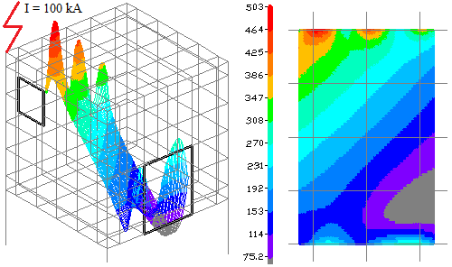
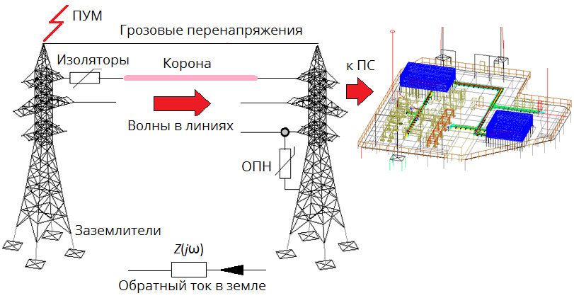
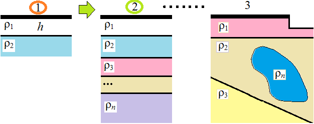

При разработке продукта преследовались три основных цели:
- многофункциональность программы: возможность проводить весь комплекс расчетов по проекту ЭМС электрических подстанций;
- высокая производительность: на порядок более высокая, чем у конкурирующих программ;
- удобство графического моделирования и визуализации результатов с использованием AutoCAD (и других САПР).
Решаемые задачи
Заземляющие устройства
Программа «ЗУМ» позволяет рассчитать нормируемые параметры ЗУ – сопротивление (комплексное, «импульсное», переходное), распределение потенциала и тока элементов ЗУ, напряжение прикосновения, шаговое напряжение при синусоидальных и импульсных воздействиях.

(3D вид сверху)
Молниезащита (внешняя)
Программа «ЗУМ» позволяет построить зоны защиты молниеотводов по российским нормам: РД 34.21.122-87, СО-153-34.21.122-2003, ВСП 22-02-07/МО РФ, а также стандарту МЭК 62305-3 методом катящейся сферы. Для метода катящейся сферы в дополнение (или вместо) зоны защиты строится зона захвата – она наиболее наглядна.
Кондуктивные помехи в контрольных кабелях
Первый способ. Согласно СТО 56947007-29.240.044-2010 величина кондуктивной помехи определяется напряжением между точками заземления экрана U (находится при расчете ЗУ), уменьшенным в k раз Uк=U/k, где k=6-10 – коэффициент экранирования (ослабления).
Второй способ. Для первого импульса тока молнии кондуктивная помеха Uк=R0l∙L, где I – ток экрана, L – длина кабеля, R0=0.018 Ом/м – погонное сопротивление медного экрана типового кабеля КВВГэ при сечении экрана S=1 мм2. Эти вопросы подробно рассмотрены в [Расчет кондуктивных помех ...].
Третий способ. Расчет помехи в 3D модели кабеля.
Электромагнитные помехи при ударе молнии
Ток молнии, протекая по молниеотводу, ЗУ и металлоконструкциям здания, создает электромагнитное поле в помещениях с микропроцессорной аппаратурой. Нормированным параметром является напряженность магнитного поля. Расчеты проводятся на эквивалентной частоте тока молнии с визуализацией решения 3D графиком и во времени с визуализацией решения анимированным 2D графиком с учетом экранирования металлоконструкциями.
Электрические и магнитные поля в нормальном режиме и режиме КЗ
Источники: шины с заданными токами и потенциалами на частоте 50 Гц. Расчеты проводятся во временной области, поскольку поля эллиптические и комплексный метод расчета неприменим (или неточен). Результаты расчетов представляются в виде 2D, 3D графиков аналогично предыдущей задаче.
Защита ПС от грозовых и коммутационных перенапряжений
Расчету подлежат волны напряжения и тока в проводах линии и шинах ПС при ударе молнии в грозозащитный трос, опору или провод ВЛ. Учитывается вольт-секундная характеристика гирлянды изоляторов, ОПН, коронирование проводов и потери в земле. Оборудование на ПС моделируется входными емкостями, величины которых определены в РД 153-34.3-35.125-99. Эти вопросы рассмотрены в презентации [Моделирование волновых процессов ...].
Особенности программы
Универсальность математической модели
Задачи ЭМС – цепно-полевые, поскольку расчету подлежат цепные параметры (токи, напряжения, входное сопротивление системы проводников) вместе с полевыми параметрами (распределение потенциала, напряженности электрического и магнитного поля с учетом экранирования). Решать их целесообразно с использованием цепно-полевых (гибридных) моделей.
Полевая модель используется для определения электромагнитных параметров проводников – матриц собственных и взаимных сопротивлений растекания, индуктивностей, емкостей. Эти параметры переносим на цепную модель, где определяем входное сопротивление, продольные и стекающие токи проводников методами теории цепей. Возвращаемся к полевой модели и на основе найденных токов (продольных и стекающих) рассчитываем дифференциальные характеристики электромагнитного поля – распределение потенциала и напряженности электрического и магнитного поля (в ближней зоне). Эта методика используется во многих работах по расчету заземлителей, а также в теории антенн. Отличительной особенностью разных методик является способ переноса параметров полевой модели в цепную модель. В программе «ЗУМ» реализованы оригинальные матричные преобразования, позволяющие выполнить эту операцию эффективно [Математические модели ...].
В настоящее время цепно-полевая модель включает в себя частотно-зависимые сопротивления (стальных проводников и земли с учетом поверхностного эффекта), нелинейные элементы (ВСХ изоляции проводов ВЛ, ВАХ ОПН, сопротивления стержневого заземлителя при искрообразовании), а также сосредоточенные сопротивления и емкости (оборудования ПС). Мы разработали эффективный алгоритм учета частотных свойств проводников во временной области (при импульсных воздействиях), что позволяет отказаться от расчетов на эквивалентной частоте (неточны) или громоздких расчетов с эквивалентными схемами замещения.
Комплекс вычислительных методов
Расчеты электромагнитных параметров и полей производятся методов эквивалентных зарядов (токов) со стержневыми элементами круглого сечения в качестве источника поля. Для проводников некруглого сечения найдены эквивалентные диаметры. Электрическая неоднородность земли учитывается методом зеркальных изображений (двухслойная модель), методом оптической аналогии (многослойная модель) и методом интегральных уравнений (3D модель). Учитывается частотная зависимость удельной проводимости земли по формулам Мессира (Messier) и Висакро-Алипио (Visacro-Alipio), что позволяет повысить точность расчета заземлителей.
Расчет установившихся режимов в цепной модели производится методом узловых напряжений. Топология цепи описывается стандартной матрицей соединений А (продольных ветвей) и матрицей В, учитывающей пути стекания тока, что составляет специфику задачи.
Для расчета переходных процессов при импульсных воздействиях реализовано три метода: частотный метод (ЧМ), метод дискретных схем (МДС) и операторный метод (ОМ) на основе шаговых алгоритмов Влаха и Синхгала. Все методы исследованы на тестовых задачах. Мы рекомендуем ОМ. ЧМ, как известно, нельзя применить для нелинейных задач. Проблемы формулы трапеций, используемой в большинстве профессиональных программах, например EMTP, связаны с локальными осцилляциями в точках перегиба функции.
Геоэлектрическая модель земли
Мы последовательно прошли путь от однородной и двухслойной модели земли к многослойной горизонтально-слоистой модели земли с 3D неоднородностями. Нам удалось существенно повысить быстродействие расчета заземлителей в двухслойной земле за счет ускорения сходимости бесконечных рядов при расчете сопротивления заземлителя. Найдены оригинальные решения по повышению быстродействия расчетов в многослойной земле, а также по гибридизации метода эквивалентных токов и метода интегральных уравнений в 3D модели земли [Сопротивление заземлителя ...].
2D и 3D визуализация и анимация в AutoCAD
Геометрическое моделирование в САПР – основное требование проектировщиков. Мы используем AutoCAD для визуализации результатов расчета (включая анимацию динамических процессов). Мы прошли три этапа интеграции с AutoCAD: простой обмен данными в формате DXF (drawing exchange format), использование технологий COM и ObjectARX.
COM технологии, используемые в ранних версиях, дают универсальное и надежное приложение, работающее на любой версии AutoCAD. Сбой в программе не ведет к сбою в AutoCAD и потере данных. Низкая производительность в задачах с большими геометрическими данными – главный недостаток приложений на основе COM, однако нам удалось значительно повысить быстродействие, используя dxf-файл в качестве буфера в операциях записи/чтения примитивов.
Текущая версия программы «ЗУМ» использует технологию ObjectARX, которая обеспечивает высокое быстродействие при работе с большими графическими данными и функциональность [Интеграция ПО с САПР]. Мы постарались нивелировать главный недостаток технологии – требование бинарной совместимости программы пользователя и версии AutoCAD, из-за которого ARX-приложение работает только на определенных версиях AutoCAD. В инсталляторе «ЗУМ» вложены версии для различных версий AutoCAD, которые выбираются автоматически.
Поддержка в геометрическом моделировании
Программа «ЗУМ» осуществляет поддержку в геометрическом моделировании. Построение регулярных сеток автоматизировано. Задавая оси в пространстве модели AutoCAD и указывая тип создаваемого объекта, можно построить модель контрольного кабеля или электромагнитного экрана. Можно создавать и более сложные объекты, такие как резервуар или модель человека.
Высокое быстродействие
Быстродействие компьютерной программы – один из основных критериев, определяющих ее конкурентоспособность. Программа «ЗУМ» работает на 1-2 порядка быстрее, чем аналогичные российские программы (порядка минуты для расчета ЗУ из 5000 элементов), что позволяет проектировщику провести полноценную серию вариантных расчетов при проектировании ЭМС электрической ПС за 1-2 дня.
Эффективность заложенных в программу «ЗУМ» математических моделей и методов – первая причина высокой производительности.
Алгоритмическая оптимизация кода – другой способ повышения производительности. Современный процессор работает на порядок быстрее оперативной памяти (ОЗУ), поэтому задача программиста – уменьшить число обращений к ОЗУ за счет обращений к быстрой кэш памяти.
Ускорение наиболее трудоемких матричных операций с использованием стандартных математических библиотек (с низкоуровневой оптимизацией и многопоточностью) – третье условие высокого быстродействия. Мы используем Intel Math Kernel Library (Intel MKL).
Стоимость и условия
ООО «ЗУМ» предлагает приобрести неисключительную лицензию на программу для ЭВМ «ЗУМ», типовые характеристики которой представлены в [Характеристики программы «ЗУМ»]. Защита ПО осуществляется электронным ключом. В комплект поставки входит документация с описанием математических моделей и методов вычислительного ядра и инструкция по работе с ПО.
Кол. ключей
Программа «ЗУМ» с электронным ключем Guardant Sign (1 раб. станция)
Кол. ключей:
250 000 руб.
Программа «ЗУМ» с электронным ключем Guardant Sign Net (10 раб. станций)
Кол. ключей:
350 000 руб.
* Лицензия на ПО НДС не облагается. Срок поставки: две недели с момента оплаты.
** Стоимость для других вариантов поставки рассчитывается индивидуально.
- Обучение работе с ПО (удаленное и с выездом к заказчику).
- Совместные расчеты и проектирование.
- Стоимость ПО с ограниченным (выбранным заказчиком) набором опций - от 100 000 руб.
- Стоимость ПО с расширенной поддержкой, обучением, гарантией и обновлением (для крупных предприятий) - до 500 000 руб.
- Стоимость ПО с доработкой по индивидуальному заказу - договорная.
Для приобретения лицензии на программу обращайтесь по электронной почте в разделе «Контакты».
Дистрибутивы
Программа «ЗУМ» (Демо) - скоро будет доступна
Программа «ЗУМ» (Полная версия - требуется лицензия) - скоро будет доступна
* Дистрибутивы включают документацию, обучающие и тестовые задачи.
- AutoCAD (или продукты семейства AutoCAD - Architecture, Electrical, т.д.) 32х и 64х разрядных версий 2011-2017;
- Windows XP и выше;
- ОЗУ 4Гб и более.